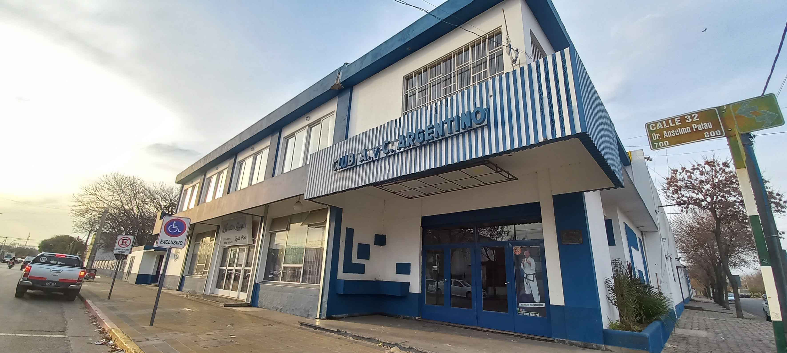

El Club Atlético y Cultural Argentino es un club deportivo argentino de la ciudad de General Pico, La Pampa. Fue fundado el 1 de agosto de 1920.
Se formalizó todo cuando se hizo realidad bajo el nombre de Foot Ball Club Argentino. La primera comisión fue provisoriamente presidida por Amadeo Fava, en cuyo período se construyó la cancha de fútbol, y luego constituida oficialmente la presidió Manuel Correché.
En 1925 se realizó una asamblea extraordinaria convocada para considerar un cambio de denominación y se propuso el nombre Club Atlético y Cultural Argentino, siendo aceptado para toda la vida. Es el segundo club, aun existente más antiguo de la ciudad, fundado poco más de un año después del Pico FBC.
Los cuatro representantes de Liga Pampeana de Fútbol en la edición 2023/24 del Torneo Regional Federal Amateur son Estudiantil de Eduardo Castex, Alvear Foot Ball Club de Intendente Alvear, Club Atlético Costa Brava de General Pico y Racing Club de Eduardo Castex.
Ferro Carril Oeste de General Pico, único club de la provincia de La Pampa en la tercera categoría del fútbol argentino, se mantuvo en la categoría y podrá disputar el torneo en la temporada 2024.
Tanto el torneo Extra de divisiones inferiores, como la Copa Liga Pampeana de Fútbol, conocerán a sus campeones el fin de semana del sábado 16 y domingo 17 de diciembre.
| Pos | Club | PT | PJ | PG | PE | PP | DF |
|---|---|---|---|---|---|---|---|
| 1 |  Club Atlético y Cultural Argentino Club Atlético y Cultural Argentino |
21 | 9 | 7 | 0 | 2 | 8 |
| 2 |  Club Deportivo Los Ranqueles Club Deportivo Los Ranqueles |
14 | 9 | 4 | 2 | 3 | 3 |
| 3 |  Club de Cultura Integral Colonia Barón Club de Cultura Integral Colonia Barón |
14 | 9 | 4 | 2 | 3 | 3 |
| 4 |  Club Social y Deportivo Belgrano Club Social y Deportivo Belgrano |
11 | 9 | 3 | 2 | 4 | -4 |
| 5 |  Club Deportivo Argentino Club Deportivo Argentino |
9 | 9 | 2 | 3 | 4 | -6 |
| 6 |  Club Atlético Catriló Club Atlético Catriló |
6 | 9 | 1 | 3 | 5 | -4 |